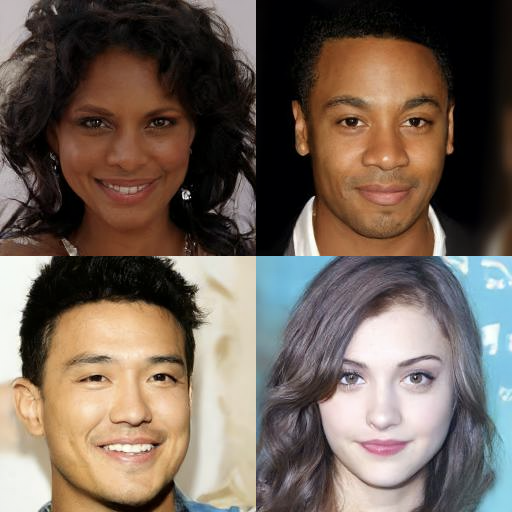
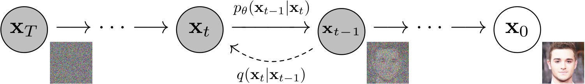
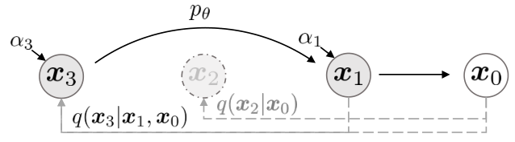

<!DOCTYPE html>
<html lang="zh-CN" data-theme="light">
<head>
<meta charset="UTF-8">
<meta name="viewport" content="width=device-width, initial-scale=1.0">
<title>第 24 章 扩散模型：从 DDPM 到 Score SDE · 多模态大模型 Cookbook</title>
<link rel="stylesheet" href="../assets/css/style.css">
<script>window.MathJax={tex:{inlineMath:[["$","$"],["\\(","\\)"]],displayMath:[["$$","$$"],["\\[","\\]"]]},svg:{fontCache:"global"}};</script>
<script src="https://cdn.jsdelivr.net/npm/mathjax@3/es5/tex-chtml.js" async></script>
</head>
<body>
<div id="progress-bar"></div>
<nav id="sidebar"></nav>
<header id="topbar">
  <button id="menu-btn">☰</button>
  <div id="search-box"><input id="search-input" placeholder="搜索全书…"><div id="search-results"></div></div>
  <div class="topbar-actions"><button class="tb-btn" id="theme-btn">🌓 主题</button></div>
</header>
<main class="content"><div class="article">

<header class="book-header">
  <div class="part-badge">第四部分 · 文生图与视觉生成</div>
  <h1 class="chapter-title">第 24 章　扩散模型：从 DDPM 到 Score SDE</h1>
  <div class="chapter-meta"><span>预计阅读 120 分钟</span><span>难度 ★★★★★</span><span>前置：第 23 章（VAE 的 ELBO）、第 1 章（优化）</span></div>
</header>

<div class="toc-mini"><b>本章目录</b><ol>
  <li><a href="#sec-1">直觉：为什么"分步破坏再学习修复"是天才设计</a></li>
  <li><a href="#sec-2">DDPM 前向过程：加噪链的完整数学</a></li>
  <li><a href="#sec-3">DDPM 训练目标：从 ELBO 到噪声预测的推导</a></li>
  <li><a href="#sec-4">采样：祖先采样与 DDIM 加速</a></li>
  <li><a href="#sec-5">Score SDE：统一视角与概率流 ODE</a></li>
  <li><a href="#sec-6">条件生成与 Classifier-Free Guidance</a></li>
  <li><a href="#sec-7">评测：FID、IS 与生成质量的度量学</a></li>
  <li><a href="#sec-8">从零实现 DDPM：完整训练代码</a></li>
  <li><a href="#sec-9">本章小结</a></li>
</ol></div>

<div class="box-tip"><p class="box-title">💡 本章导读</p>
<p>扩散模型是 2020–2026 年视觉生成领域最重要的技术，没有之一。本章是全书数学密度最高的一章：我们将从三个互补的视角（变分/随机微分/ODE）完整建立扩散模型的理论，推导 DDPM 的训练目标与 DDIM 的加速采样，剖析 CFG（Classifier-Free Guidance）——这个让所有条件生成模型质量翻倍的小技巧。所有推导都一步不跳；每个公式都配直觉解释。学完本章，Stable Diffusion（第 25 章）、ControlNet（第 26 章）、视频扩散（第 29 章）对你来说都只是"同一数学在不同架构上的部署"。</p></div>

<h2 id="sec-1"><span class="sec-no">1.</span>直觉：为什么"分步破坏再学习修复"是天才设计</h2>
<p>先建立不看公式就能记住的心智图像。<b>前向过程</b>：把一张清晰图片连续加噪 $T$ 步，每步加一点，最终变成纯高斯噪声——这是<b>固定的、无需学习的</b>（数学上就是逐步高斯卷积）。<b>反向过程</b>：训练一个网络学会"从稍微带噪的图恢复到稍微更清晰的图"——只做一小步修复。生成时：从纯噪声出发，重复调用这个"修复网络" $T$ 次，图像逐渐浮现。</p>
<p>为什么这个设计妙？第 23 章说过单步 VAE 的病根：<b>一步从噪声跳到数据，模型被迫对所有可能的解释取平均→模糊</b>。扩散把"大跳跃"拆成 $T$ 个小步：每步的"噪声量"很小、数据分布之间的差异很小，<b>每一步都是一个简单得多的回归问题</b>，而且"当前图像长什么样"几乎完全决定了"下一步该去哪"（确定性大增）。用一句话：<b>扩散把"生成"这个非平衡问题，分解成 $T$ 个平衡的"去噪回归"问题</b>——回归是深度学习最擅长的，这就是扩散赢的原因。</p>
<div class="box-history"><p class="box-title">🕰 历史一刻：2015 年的冷遇与 2020 年的正名</p>
<p>扩散的数学最早出现在 2015 年（Sohl-Dickstein et al., Deep Unsupervised Learning using Nonequilibrium Thermodynamics，arXiv:1503.03585），当时反响平平——公式复杂、效果不及 GAN。2020 年 DDPM（arXiv:2006.11239）做了三个工程化决策——预测噪声而非均值、线性 β 调度、用 U-Net 与大 batch——才让它一战成名。2021 年 Score SDE（arXiv:2011.13456）与 Classifier-Free Guidance（arXiv:2207.12598）补齐理论与条件化，2022 年潜在扩散（arXiv:2112.10752）补齐算力，至此"扩散时代"全面开启。一个几乎被遗忘的细节：2015 年论文标题里的"非平衡热力学"不是修辞——前向加噪正是把数据分布推向热力学平衡（高斯）的过程，反向则是被学习驱动的"退火"。</p></div>

<p>还有一个值得内化的视角：<b>噪声水平是"语义粒度的坐标"</b>。低噪声时模型修的是高频细节（纹理、边缘），中噪声修的是物体布局，高噪声时只剩下"大局构图"的确定性——一次去噪轨迹就像从"决定世界上有什么"逐步细化到"决定每个像素是什么"。这个视角的解释力：①为什么 CFG 在高噪声端作用最大（引导"画什么"）；②为什么 img2img 的"强度"参数等于选择轨迹的入场点（强度 0.5 = 从中间噪声开始，保留一半构图）；③为什么多步蒸馏只需覆盖"常用噪声区间"（LCM 类）。生成模型的一切行为，都可以在"SNR 轴"上找到位置。</p>

<figure><figcaption>图 24-3　<b>DDPM 的生成样本</b>（CelebA-HQ 256）：2020 年的扩散首次在人脸质量上比肩 GAN——注意样本的多样性与细节，这在当时是"回归式生成"能力的破圈证明（来源：Ho et al., DDPM, arXiv:2006.11239）。</figcaption></figure>

<h2 id="sec-2"><span class="sec-no">2.</span>DDPM 前向过程：加噪链的完整数学</h2>
<p>设数据 $x_0\sim q(x_0)$，前向过程定义为一个马尔可夫链：</p>
<div class="math-block">$$q(x_t \mid x_{t-1}) = \mathcal{N}(x_t;\ \sqrt{1-\beta_t}\, x_{t-1},\ \beta_t I),\qquad t=1,\dots,T$$</div>
<p>其中 $\beta_t\in(0,1)$ 是噪声调度（schedule），$T$ 通常为 1000。每一步：信号缩小 $\sqrt{1-\beta_t}$ 倍、加入方差 $\beta_t$ 的高斯噪声——信号方差逐步衰减，噪声方差逐步累积。利用高斯的可加性，任意时刻 $t$ 可以<b>一步直达</b>（这是训练高效的关键）：令 $\alpha_t=1-\beta_t$、$\bar\alpha_t=\prod_{s=1}^t \alpha_s$，则</p>
<div class="math-block">$$q(x_t \mid x_0) = \mathcal{N}(x_t;\ \sqrt{\bar\alpha_t}\, x_0,\ (1-\bar\alpha_t) I)\quad\Longleftrightarrow\quad x_t = \sqrt{\bar\alpha_t}\, x_0 + \sqrt{1-\bar\alpha_t}\,\epsilon,\ \ \epsilon\sim\mathcal{N}(0,I)$$</div>
<p><b>推导</b>（高斯链的合并）：$x_t = \sqrt{\alpha_t}x_{t-1}+\sqrt{1-\alpha_t}\epsilon_t$，递归代入 $x_{t-1}$：系数相乘（$\sqrt{\alpha_t\alpha_{t-1}}\cdots=\sqrt{\bar\alpha_t}$），噪声项 $\sqrt{1-\alpha_t}\epsilon_t + \sqrt{\alpha_t(1-\alpha_{t-1})}\epsilon_{t-1}+\cdots$ 的方差相加 $=(1-\alpha_t)+\alpha_t(1-\alpha_{t-1})+\cdots=1-\bar\alpha_t$。当 $T\to\infty$、$\bar\alpha_T\to 0$ 时，$x_T$ 趋于标准高斯——前向的终点是"无信息的起点"。</p>
<p>调度还有一个"训练与推理一致性"的陷阱要提前打预防针：调度决定的不只是质量，还有<b>数值范围与 SNR 曲线</b>。在 64×64 潜空间（第 25 章）直接沿用像素空间的调度会因方差尺度不同而训练不稳——SD 的做法是缩放端点 β。更深的修正来自 zero-terminal SNR 研究（arXiv:2305.08891）：线性调度的终点 $arlpha_Tpprox 0.0047$ 意味着"终点不是纯噪声"，这会破坏 CFG 无条件分支的语义与 DDPM 的理论起点假设；把 $arlpha_T$ 强制为 0（zero-terminal SNR）后，高 CFG 下的亮度伪影显著减轻。可以把调度设计总结为一句话：<b>设计"SNR 随 t 单调降到 0"的曲线，它决定每一步去噪的难度分配</b>。</p>
<p><b>调度（schedule）的设计</b>：DDPM 用线性 $\beta_t\in[10^{-4},0.02]$；后续研究（Nichol &amp; Dhariwal, arXiv:2102.09672）发现线性调度在末端噪声过大（低分辨率细节被过早摧毁），提出余弦调度 $\bar\alpha_t=\cos^2\big(\frac{t/T+s}{1+s}\cdot\frac{\pi}{2}\big)$——噪声量随 $t$ 更均匀地铺开。SD 使用缩放线性调度（端点 $\beta$ 缩放到适合 64×64 潜空间）。<b>调度不是超参数而是"信息销毁的时间表"</b>：它决定哪些细节在第几步被摧毁、从而决定反向模型的"分工表"。</p>

<h2 id="sec-3"><span class="sec-no">3.</span>DDPM 训练目标：从 ELBO 到噪声预测的推导</h2>
<p>反向过程也是马尔可夫链：$p_\theta(x_{t-1}\mid x_t)=\mathcal{N}(x_{t-1};\ \mu_\theta(x_t,t),\ \Sigma_\theta(x_t,t))$。训练目标就是第 23 章的 ELBO（变分下界），但现在"编码器"是固定的加噪链：</p>
<div class="math-block">$$-\log p_\theta(x_0) \le \mathbb{E}_q\Big[-\log\frac{p_\theta(x_{0:T})}{q(x_{1:T}\mid x_0)}\Big] =: L$$</div>
<div class="box-theory"><p class="box-title">📐 理论推导：ELBO 分解为 $T$ 项"逐步去噪"（DDPM 论文 §3 的完整版）</p>
<p><b>第 1 步：按时间展开</b>。利用链式法则 $p_\theta(x_{0:T})=p(x_T)\prod_t p_\theta(x_{t-1}\mid x_t)$ 与 $q(x_{1:T}\mid x_0)=\prod_t q(x_t\mid x_{t-1})$，把对数拆开并重排（用贝叶斯 $q(x_{t-1}\mid x_t,x_0)=q(x_t\mid x_{t-1})q(x_{t-1}\mid x_0)/q(x_t\mid x_0)$ 处理 $t>1$ 项），得到：</p>
<div class="math-block">$$L = \underbrace{\mathrm{KL}(q(x_T\mid x_0)\,\|\,p(x_T))}_{L_T\ \text{（无参数，常数）}} + \sum_{t=2}^{T}\underbrace{\mathrm{KL}\big(q(x_{t-1}\mid x_t,x_0)\,\|\,p_\theta(x_{t-1}\mid x_t)\big)}_{L_{t-1}\ \text{（逐步去噪）}} + \underbrace{-\log p_\theta(x_0\mid x_1)}_{L_0\ \text{（最后一步）}}$$</div>
<p><b>第 2 步：写出真反向</b>。两个高斯做贝叶斯组合，$q(x_{t-1}\mid x_t,x_0)$ 仍是高斯，均值与方差为：</p>
<div class="math-block">$$\tilde\mu_t(x_t,x_0)=\frac{\sqrt{\bar\alpha_{t-1}}\,\beta_t}{1-\bar\alpha_t}x_0 + \frac{\sqrt{\alpha_t}(1-\bar\alpha_{t-1})}{1-\bar\alpha_t}x_t,\qquad \tilde\beta_t=\frac{1-\bar\alpha_{t-1}}{1-\bar\alpha_t}\,\beta_t$$</div>
<p><b>第 3 步：两个高斯的 KL 有闭式</b>。若固定方差 $\Sigma_\theta=\sigma_t^2 I$（DDPM 取 $\tilde\beta_t$ 或 $\beta_t$），KL 退化为均值之差的加权平方：$L_{t-1}=\frac{1}{2\sigma_t^2}\|\tilde\mu_t-\mu_\theta\|^2+\text{const}$。把 $x_0=\frac{1}{\sqrt{\bar\alpha_t}}(x_t-\sqrt{1-\bar\alpha_t}\,\epsilon)$ 代入 $\tilde\mu_t$，可重写为：</p>
<div class="math-block">$$L_{t-1}-C = \frac{\beta_t^2}{2\sigma_t^2 \alpha_t (1-\bar\alpha_t)}\ \mathbb{E}\big[\|\epsilon - \epsilon_\theta(\sqrt{\bar\alpha_t}x_0+\sqrt{1-\bar\alpha_t}\epsilon,\ t)\|^2\big]$$</div>
<p><b>第 4 步：工程简化</b>。DDPM 发现去掉系数（统一权重 1）效果更好，得到最终训练目标——<b>加权去噪回归</b>：</p>
<div class="math-block">$$L_{\mathrm{simple}}(\theta) = \mathbb{E}_{x_0,\epsilon,t}\Big[\|\epsilon - \epsilon_\theta(x_t, t)\|^2\Big],\qquad x_t=\sqrt{\bar\alpha_t}x_0+\sqrt{1-\bar\alpha_t}\epsilon$$</div>
<p>三行总结训练算法：①采 $x_0$；②采 $\epsilon$、$t$，一步合成 $x_t$；③网络预测 $\epsilon$，均方误差回传。<b>整个扩散模型的训练就是这么朴素</b>——复杂度全部在"为什么等价"的推导里，不在工程里。这也解释了扩散的可扩展性：目标是回归，没有对抗、没有采样偏差，堆数据堆算力就能涨。</p></div>
<figure><figcaption>图 24-1　<b>DDPM 的有向图模型</b>：前向 $q$（实线）逐步加噪，反向 $p_\theta$（虚线）逐步去噪；训练时可用任意 $t$ 的"一步直达"跳过中间步（来源：Ho et al., DDPM, arXiv:2006.11239）。</figcaption></figure>
<div class="box-paper"><p class="box-title">📄 论文精读：DDPM（Ho et al., NeurIPS 2020, arXiv:2006.11239）</p>
<p><b>问题</b>：2015 年的扩散框架效果远逊 GAN，能否用现代深度学习工程把它推到 SOTA？<b>方法</b>：三大决策——①预测噪声 $\epsilon$ 而非均值（等价但训练更稳）；②$T=1000$ 线性调度 + U-Net（带自注意力）骨干；③简化目标 $L_{\mathrm{simple}}$（去系数）。<b>关键结果</b>：CIFAR-10 无条件 FID 3.17 首次超越 GAN；LSUN 高质量样本；渐进质量（低步数也可看）。<b>为什么重要</b>：它不是理论发明（理论来自 2015 年），而是"工程转化"的典范——三个决策全部成为后续默认；它证明"回归式生成"的可扩展路线，为 LDM/SD 铺路。<b>延伸阅读</b>：论文 §3.2 的系数消融；官方代码的 EMA（0.9999，几乎必涨点）。</p></div>

<div class="box-theory"><p class="box-title">📐 数字演练：亲手走一遍 $L_{t-1}$ 的化简</p>
<p>取一个具体数值走一遍推导，检验你是否真懂（假设 $T=4$、$eta=[0.1,0.1,0.1,0.1]$，则 $lpha=0.9$、$arlpha=[0.9,0.81,0.729,0.656]$）。取 $t=3$：真反向均值 $	ilde\mu_3=rac{\sqrt{0.81}\cdot0.1}{1-0.729}x_0+rac{\sqrt{0.9}(1-0.81)}{1-0.729}x_3pprox1.053x_0+0.989x_3$；代入 $x_3=0.854x_0+0.521\epsilon$，整理得 $	ilde\mu_3pprox1.895x_0-0.905\epsilon$...（系数看似爆掉是因为高 $eta$ 小 $T$ 的玩具设定；真实 $T=1000$ 下每步系数温和）。关键练习是<b>最后一步</b>：把 $x_0=(x_3-\sqrt{1-arlpha_3}\epsilon)/\sqrt{arlpha_3}$ 代回，验证 $	ilde\mu_3$ 可以写成只含 $x_3$ 与 $\epsilon$ 的形式，从而证明"$\|\epsilon-\epsilon_	heta\|^2$ 就是均值回归"。这个 15 分钟的手算，是把第 3 节从"看懂"变成"会推"的最短路径。</p></div>

<p><b>v-prediction：另一种参数化的故事</b>。Salimans &amp; Ho（arXiv:2210.02347）提出预测 $v=\sqrt{arlpha_t}\,\epsilon-\sqrt{1-arlpha_t}\,x_0$——它把"噪声预测"（高噪声端主导）与"数据预测"（低噪声端主导）统一成一根"从数据指向噪声的轴"上的坐标，网络的"难度曲线"在所有 $t$ 上更均匀。SD2.x 与 SD3/Flux 采用了 v（或等价的 velocity）预测。<b>三种参数化（$\epsilon$/$x_0$/$v$）可以互相换算</b>（代数恒等式），选型的实际考量是训练动力学：高分辨率与流框架下 v 更稳，小实验差异不大。Kingma &amp; Gao 的统一视角（arXiv:2303.00848）把三种参数化与 VDM 的连续时间 ELBO 全部打通——是"参数化选择"议题的终点站。</p>

<h2 id="sec-4"><span class="sec-no">4.</span>采样：祖先采样与 DDIM 加速</h2>
<figure><figcaption>图 24-2　<b>DDIM 的加速采样</b>：子序列采样把 1000 步压缩为少量关键步，确定性模式还支持编辑与插值（来源：Song et al., DDIM, arXiv:2010.02502）。</figcaption></figure>
<p>DDPM 的原始采样（ancestral sampling）：从 $x_T\sim\mathcal{N}(0,I)$ 出发，每步按反向高斯采样 $x_{t-1}=\frac{1}{\sqrt{\alpha_t}}\Big(x_t-\frac{\beta_t}{\sqrt{1-\bar\alpha_t}}\epsilon_\theta(x_t,t)\Big)+\sigma_t z$——<b>必须走满 1000 步</b>，这是早期扩散被诟病"慢"的原因。DDIM（Denoising Diffusion Implicit Models，Song et al., arXiv:2010.02502）给出优雅的加速。</p>
<div class="box-theory"><p class="box-title">📐 理论推导：DDIM 的非马尔可夫化与采样公式</p>
<p><b>第 1 步：改写目标</b>。DDIM 的洞察是：ELBO 分解中各 $L_{t-1}$ 项只约束<b>边缘分布 $q(x_t\mid x_0)$</b>（每一步的高斯形状），不约束"过程是马尔可夫的"。于是可以构造一族<b>非马尔可夫前向</b>：所有 $q_\sigma(x_t\mid x_0)$ 边缘与 DDPM 相同，但中间步允许"跳跃"——训练目标不变（还是预测噪声），<b>已训练好的 DDPM 可以直接用新的采样过程</b>。</p>
<p><b>第 2 步：推出采样公式</b>。设从 $x_t$ 跳到更早的 $x_{t-1}$（或任意子序列 $t_i$），预测 $x_0$ 后再"重新加噪到 $t-1$"：</p>
<div class="math-block">\begin{aligned}
\hat x_0 &= \frac{x_t-\sqrt{1-\bar\alpha_t}\,\epsilon_\theta(x_t,t)}{\sqrt{\bar\alpha_t}}\\
x_{t-1} &= \sqrt{\bar\alpha_{t-1}}\,\hat x_0 + \underbrace{\sqrt{1-\bar\alpha_{t-1}-\sigma_t^2}\,\epsilon_\theta(x_t,t)}_{\text{方向项}} + \sigma_t z
\end{aligned}</div>
<p>当 $\sigma_t=0$（确定性模式），采样成为 ODE 式的确定性轨迹：<b>同一初值永远生成同一图像</b>（可做插值与编辑），且子序列采样（如取 $T$ 的 1/10 步）几乎不损质量——<b>1000 步 → 20–50 步</b>的加速由此而来。$\sigma_t$ 的选择还有统一解释：$\sigma_t^2\propto\sqrt{\frac{1-\bar\alpha_{t-1}}{1-\bar\alpha_t}}$ 时恰好对应 DDPM（含噪），$\sigma_t=0$ 是 DDIM 确定性极限。</p></div>
<div class="box-tip"><p class="box-title">💡 技巧：采样器的实战选择（2026）</p>
<p>从 DDIM 至今涌现了十几种采样器，工程选型速查：<b>DDIM</b>——基线，轨迹可控、支持编辑（img2img 中低强度走同轨迹）；<b>DPM-Solver++/DPM++ 2M Karras</b>（arXiv:2206.00927 系）——高阶 ODE 求解器，10–20 步达到高质量，ComfyUI 默认；<b>Euler/Euler a</b>——简单稳健，Euler a 的祖先采样出图"锐"但不可复现；<b>UniPC</b>——5–10 步的极限加速；<b>LCM/Turbo/Lightning 蒸馏</b>——1–4 步实时生成（把多步轨迹蒸馏进模型，第 39 章）。经验法则：<b>质量优先用 DPM++ 2M Karras 20–30 步；速度优先用蒸馏 4 步；要做编辑插值用 DDIM 确定性</b>。</p></div>

<p>把采样器的家族脉络梳理成一条线，防止"记住一堆名字"：<b>DDPM（祖先）</b>是"每步都从真后验采样"的最保守方案；<b>DDIM</b>证明"过程可以非马尔可夫"，打开子序列跳步；<b>概率流 ODE</b>把采样变成确定性积分；<b>DPM-Solver/Euler/Heun/UniPC</b>是同一 ODE 的不同数值求解器（阶数与稳定性的权衡）；<b>蒸馏（LCM/Turbo）</b>则把"多步求解"本身学进权重。这条线的终点思想：<b>采样器的优劣=对同一 ODE 的逼近效率</b>——所以比较采样器必须固定模型与步数，否则是"关公战秦琼"。</p>

<h2 id="sec-5"><span class="sec-no">5.</span>Score SDE：统一视角与概率流 ODE</h2>
<p>Score SDE（Song et al., arXiv:2011.13456，ICLR 2021 杰出论文）把 DDPM（离散）与 score matching（Song &amp; Ermon 的连续噪声条件 score）统一进随机微分方程框架。<b>前向 SDE</b>：$dx = f(x,t)\,dt + g(t)\,dw$，其中 $dw$ 是布朗运动——DDPM 是它的离散化（$f=-\frac12\beta(t)x$，方差保持型 VP-SDE；还有一种 VE-SDE 直接加噪声）。<b>反向 SDE</b>（Anderson 1982 的时间反转定理）：</p>
<div class="math-block">$$dx = \big[f(x,t) - g(t)^2\,\nabla_x\log p_t(x)\big]dt + g(t)\,d\bar w$$</div>
<p>唯一的未知量是<b>分数函数</b> $\nabla_x\log p_t(x)$——"对数密度的梯度"，指示"往概率更高的方向走"。去噪 score matching 的经典结论（Hyvärinen 2005）：<b>预测噪声的回归模型就是分数函数的估计器</b>——$\epsilon_\theta(x_t,t)$ 与 $-\sigma_t\nabla_x\log p_t(x_t)$ 在 VP-SDE 下差一个已知系数。所以"DDPM 预测噪声"与"score matching 学分数"是同一件事的两种记法。</p>
<p><b>概率流 ODE（probability flow ODE）</b>是 Score SDE 最漂亮的产物：存在一个与反向 SDE <b>边缘分布完全相同</b>的确定性 ODE：$\frac{dx}{dt}=f(x,t)-\frac12 g(t)^2\nabla_x\log p_t(x)$。它把生成变成"沿 ODE 轨迹的积分"，带来三个礼物：<b>①</b>任意高阶 ODE 求解器加速（DPM-Solver 家族的理论基础）；<b>②</b>轨迹可逆——把真实图像沿 ODE 积到噪声（编码），可用于似然计算与图像编辑；<b>③</b>与流模型的统一——扩散模型是"固定前向 + 学习分数"的流模型，Rectified Flow 是"学习速度场"的流模型，两大家在 ODE 框架下会师。第 27 章 SD3 的 Rectified Flow 推导将继续这条线。</p>
<div class="box-theory"><p class="box-title">📐 理论推导：为什么"预测噪声"=估计分数</p>
<p>对 VP-SDE 的边缘 $p_t(x_t\mid x_0)=\mathcal{N}(\sqrt{\bar\alpha_t}x_0,\ (1-\bar\alpha_t)I)$，其对数密度对 $x_t$ 的梯度是：</p>
<div class="math-block">$$\nabla_{x_t}\log p_t(x_t\mid x_0) = -\frac{x_t-\sqrt{\bar\alpha_t}x_0}{1-\bar\alpha_t} = -\frac{\epsilon}{\sqrt{1-\bar\alpha_t}}$$</div>
<p>（第二步用 $x_t-\sqrt{\bar\alpha_t}x_0=\sqrt{1-\bar\alpha_t}\,\epsilon$。）对联合分布 $p_t(x_t)=\int p_t(x_t|x_0)q(x_0)dx_0$ 取条件期望，可得 $-\sqrt{1-\bar\alpha_t}\,\nabla\log p_t(x_t)=\mathbb{E}[\epsilon\mid x_t]$——<b>"给定带噪图像预测所加噪声的期望"正是去噪任务，而 Tweedie 公式保证这个条件期望就是分数函数的已知倍数</b>。于是 $\epsilon_\theta(x_t,t)\approx\mathbb{E}[\epsilon|x_t]$ 的回归训练=分数估计。这个等价的三点含义：①噪声预测网络学的是"指向数据的高维方向场"；②score-based 的所有理论（流、ODE、似然）自动适用于 DDPM；③条件生成的"分数组合"技巧（下节 CFG）有了清晰的操作对象。</p></div>

<p><b>分数视角的三个经典应用</b>（都是" $
abla\log p$ 的再利用"）：①<b>SDEdit</b>——把带噪的真实图像"部分还原"，实现编辑（上面 img2img 的原理）；②<b>退火朗之万采样</b>——纯 score 的 MCMC 采样器（NCSN 的原方案，噪声从大到小，是"为什么逐步采样有效"的概率论解释）；③<b>逆问题求解</b>——已知退化算子（去模糊/超分/补全）时，把 $
abla\log p(y\mid x)$ 加到先验分数上，无需训练即可做后验采样（DPS，arXiv:2209.14687）。三者的共同哲学：<b>分数函数是"数据分布的导航场"，任何额外的信息（条件/观测/约束）都以"在导航场上叠加梯度"的方式进入</b>——这比记"某个具体算法"更有迁移力。</p>

<div class="tbl-wrap"><table>
<caption>表 24-2　VE-SDE 与 VP-SDE 对照（理解扩散家族的坐标系）</caption>
<thead><tr><th>性质</th><th>VE-SDE（score 视角）</th><th>VP-SDE（DDPM 视角）</th></tr></thead>
<tbody>
<tr><td>前向形式</td><td>$dx=\sqrt{d\sigma^2/dt}\,dw$（纯加噪）</td><td>$dx=-rac12eta(t)x\,dt+\sqrt{eta(t)}\,dw$（缩放+加噪）</td></tr>
<tr><td>变量含义</td><td>$\sigma$=噪声标准差</td><td>$arlpha_t$=信号保持率</td></tr>
<tr><td>终点分布</td><td>$\mathcal N(0,\sigma_{\max}^2 I)$（方差爆炸需截断）</td><td>$\mathcal N(0,I)$（严格标准高斯）</td></tr>
<tr><td>网络输入预条件</td><td>需 $1/\sigma$ 缩放（EDM 的 $\mathrm{c_{skip}}$ 设计）</td><td>天然有界</td></tr>
<tr><td>对应离散族</td><td>NCSN/score matching</td><td>DDPM/DDIM</td></tr>
<tr><td>SD 实际采用</td><td>SD3/Flux 的 flow 路线更接近"广义 VE"</td><td>SD1.x/2.x 的经典路线</td></tr>
</tbody></table></div>
<p>这张表的实际用途：<b>读任何扩散论文先辨认它是 VE 还是 VP 语言</b>（看变量是 $\sigma$ 还是 $arlpha_t$），再把公式"翻译"到你自己熟悉的坐标系——所有"新方法"的表面差异，一半来自坐标系差异而非实质差异。EDM 的贡献正是把这种翻译标准化了。</p>

<h2 id="sec-6"><span class="sec-no">6.</span>条件生成与 Classifier-Free Guidance</h2>
<p>无条件扩散会生成"随机的好图"，但应用要的是<b>控制</b>（文生图、编辑、布局）。条件化本身简单：把条件 $c$（文本编码、类别、图像）喂进网络 $\epsilon_\theta(x_t,t,c)$。真正的魔法是 <b>CFG（Classifier-Free Guidance，Ho &amp; Salimans, arXiv:2207.12598）</b>——一个两行代码的技巧，让生成质量产生台阶式跃升。</p>
<div class="box-theory"><p class="box-title">📐 理论推导：从引导采样到 CFG 公式</p>
<p><b>思路 1：分类器引导（Sohl-Dickstein/Dhariwal 的前身）</b>。若有一个独立分类器 $p_\phi(c\mid x_t)$，其对数梯度 $\nabla\log p_\phi(c\mid x_t)$ 指示"哪里更像条件 $c$"。把它加进分数：</p>
<div class="math-block">$$\tilde\epsilon = \epsilon_\theta(x_t,t,c) - \sqrt{1-\bar\alpha_t}\ \gamma\, \nabla_{x_t}\log p_\phi(c\mid x_t),\qquad \gamma\ge 1 \ \text{为引导强度}$$</div>
<p>这相当于在每步去噪时朝"更符合条件"的方向多走 $\gamma$ 倍。<b>缺点</b>：要额外训练一个能在带噪图像上工作的分类器。</p>
<p><b>思路 2：CFG 消灭分类器</b>。贝叶斯：$\nabla\log p(c\mid x_t)=\nabla\log p(x_t\mid c)-\nabla\log p(x_t)$。两个分数都可以用<b>同一个</b>条件扩散网络近似（一个有条件输入、一个把条件置空 $\varnothing$）：训练时随机丢弃条件（10–20% 概率 $c\leftarrow\varnothing$），同时学会两个模型；推理时组合：</p>
<div class="math-block">\begin{aligned}
\tilde\epsilon_\gamma(x_t, c) &= \epsilon_\theta(x_t, t, \varnothing) + \gamma\,\big[\epsilon_\theta(x_t, t, c) - \epsilon_\theta(x_t, t, \varnothing)\big]\\
&= \underbrace{(1-\gamma)\,\epsilon_\theta(x_t,\varnothing)}_{\text{无条件外推}} + \underbrace{\gamma\,\epsilon_\theta(x_t, c)}_{\text{条件方向}}
\end{aligned}</div>
<p><b>γ 的语义</b>：$\gamma=1$ 是普通条件采样；$\gamma>1$ 是"条件方向的外推"——放大条件分量的梯度，等效于对 $p(x_t\mid c)$ 做<b>温度为 $1/\gamma$ 的锐化</b>（严格地说是在隐式分类器上取 $\gamma$ 次幂）。代价：外推超出训练分布，γ 过大导致过饱和、对比度过高、多样性下降。经验区间：SD 1.x 用 7–8、SDXL/SD3 用 4–6、Flux 类流模型用 2–3.5（且流模型的"引导蒸馏"版本无需推理时 CFG）。<b>CFG 是理解当代生成 API 中"guidance scale"参数的全部背景</b>。</p></div>
<div class="box-warn"><p class="box-title">⚠️ 陷阱：负提示词与 CFG 的关系</p>
<p>SD 生态的"负提示词"（negative prompt）：把无条件分支替换为负条件分支 $\tilde\epsilon=\epsilon_\theta(x_t,c_{\text{neg}})+\gamma[\epsilon_\theta(x_t,c)-\epsilon_\theta(x_t,c_{\text{neg}})]$——即"远离负条件、靠近正条件"的外推。它比纯 CFG 更可控（能指定"不要什么"），但本质仍是分布外推：负提示词里堆砌太多词会造成"对抗性伪影"（模型为"远离"而生成的畸形）。另一个常见误用：CFG 与采样步数联合调——高 γ 需要更多步数才能收敛，"20 步 + γ=15"的糊图不是采样器的锅。</p></div>

<p><b>CFG 的工程细节三则</b>：①<b>计算成本</b>——每步要前向两次（条件+无条件），显存与时间×2；SDXL 时代用 "CFG chunking"（两分支批合并）与后续的"引导蒸馏"（把 CFG 蒸进权重，Flux 免 CFG）降低开销。②<b>与步数的耦合</b>——γ 越大轨迹越"陡"，需要更多步收敛；经验关系：γ 每加 2，步数约加 20%。③<b>γ 与分辨率交互</b>——高分辨率下同一 γ 视觉效果更弱（像素面积摊薄引导），跨分辨率复用参数时要重调。这三条覆盖了"为什么我的图发灰/过曝/糊"的多数案例。</p>

<p><b>条件化的全景地图</b>（为第 26 章铺路）：CFG 解决"条件方向如何放大"，但条件<b>怎么进来</b>还有一族设计：<b>①交叉注意力注入</b>（文本编码作为 K/V，SD1.x/2.x 的方式——语义级、软对齐）；<b>②通道拼接/相加</b>（inpainting 的 mask+image 拼接——结构级、硬约束）；<b>③adaLN 调制</b>（DiT/SD3 用条件调制 norm 参数——全局风格级，对齐 ch13 的 FiLM 家族）；<b>④外部控制分支</b>（ControlNet，第 26 章——把空间结构作为强先验）。四种方式的"条件粒度"从软到硬排列，实际系统常组合使用（SDXL：交叉注意力+附加 token+size 条件；SD3：adaLN+联合注意力）。选型口诀：<b>语义条件走注意力，结构条件走拼接或分支，全局条件走调制</b>。</p>

<h2 id="sec-7"><span class="sec-no">7.</span>评测：FID、IS 与生成质量的度量学</h2>
<p>扩散时代沿用了第 23 章的 FID/IS，但评测学有了新的发展，这里给出完整坐标：<b>①FID</b>——分布距离的金标准，适合同类任务比较（CIFAR/FFHQ），对 T2I 失效（开放式文本无法定义"真分布"）；<b>②CLIPScore</b>——图文对齐度的自动代理（生成图与文本的 CLIP 余弦），是 T2I 时代的第一代"对齐指标"（第 12 章的 CLIP 再次出场）；<b>③人类偏好模型</b>——HPS v2（arXiv:2310.12925）、ImageReward（arXiv:2304.05977）用人类标注训练的打分器，与人类判断相关性最高，成为 2024–2026 的主流自动评测；<b>④结构化基准</b>——GenEval（对象/计数/位置逐项检查）、DPG-Bench（密集 prompt 解析），把"对齐"拆成可归因的子项。<b>⑤文字渲染</b>——自 DALL-E 3 起成为兵家必争的显示性指标（简单文本渲染正确率）。</p>
<div class="tbl-wrap"><table>
<caption>表 24-1　生成质量指标的使用指南</caption>
<thead><tr><th>指标</th><th>度量什么</th><th>优点</th><th>坑</th><th>适用</th></tr></thead>
<tbody>
<tr><td>FID</td><td>分布距离</td><td>对模式崩溃敏感</td><td>需同分布参照；样本 ≥5 万</td><td>固定域（人脸/物体）</td></tr>
<tr><td>CLIPScore</td><td>图文对齐</td><td>免训练、可逐样本</td><td>CLIP 盲点遗传（计数/空间）</td><td>T2I 快速评估</td></tr>
<tr><td>HPS/ImageReward</td><td>人类偏好</td><td>与主观质量最相关</td><td>被优化后可被"刷"</td><td>模型选型、RLHF 奖励</td></tr>
<tr><td>GenEval/DPG</td><td>结构化对齐</td><td>可归因到子能力</td><td>覆盖面有限</td><td>诊断能力短板</td></tr>
<tr><td>文字渲染率</td><td>文本渲染正确</td><td>客观可验</td><td>只测特定 prompt 类</td><td>海报/设计场景</td></tr>
</tbody></table></div>
<div class="box-tip"><p class="box-title">💡 技巧：给生成评测做"反作弊"三件套</p>
<p>自动指标都会被针对性优化（Goodhart 定律），评测方案的三件套：<b>①</b>固定随机种子与采样协议（步数/CFG/分辨率全公开）；<b>②</b>多指标交叉（HPS 高但 GenEval 低=讨好审美但结构崩坏）；<b>③</b>定期用小规模人工盲评校准（20–50 对比较足以验证自动指标没漂移）。这三个习惯能把"指标体操"挡在决策之外。</p></div>

<p><b>一次完整的评测演练</b>（可直接照做）：任务=无条件 CIFAR 生成。<b>步骤</b>：①固定采样协议（DDIM 50 步、确定性）；②生成 50000 张，注意用 EMA 权重；③与训练集的"固定 50000 参照"（同一批、不重复采样）算 FID（clean-fid 库，自动处理 resize/特征）；④同时记录 precision/recall（分布的保真/覆盖两轴，arXiv:1904.06991——FID 只是它们聚合的代理）；⑤用 200 张人工盲评校准。这套流程的价值在于<b>可复现性</b>：三个月后你回看任何一次实验，都因协议固定而可比。T2I 场景把步骤③换成 HPS+GenEval、④的盲评 prompt 从固定集合抽取——框架不变。</p>

<h2 id="sec-8"><span class="sec-no">8.</span>从零实现 DDPM：完整训练代码</h2>
<div class="code-wrap"><div class="code-head"><span class="lang">python</span><button class="copy-btn">复制</button></div>
<pre><code># 从零实现 DDPM（MNIST/CIFAR 均可跑）：把本章公式逐行落地
import torch, torch.nn as nn, math

class Schedule:
    def __init__(self, T=1000, device="cuda"):
        betas = torch.linspace(1e-4, 0.02, T, device=device)   # 线性调度
        alphas = 1 - betas
        self.ab = torch.cumprod(alphas, dim=0)                 # \bar{α}_t
        self.T, self.device = T, device
    def add_noise(self, x0, t):
        """一步直达：x_t = √ᾱ x0 + √(1-ᾱ) ε（第 2 节核心公式）"""
        ab = self.ab[t].view(-1, 1, 1, 1)
        eps = torch.randn_like(x0)
        return ab.sqrt() * x0 + (1 - ab).sqrt() * eps, eps

class Unet(nn.Module):
    """教学版：用 Conv 序列替代真正的 U-Net（结构见第 25 章）"""
    def __init__(self, T=1000):
        super().__init__()
        self.net = nn.Sequential(
            nn.Conv2d(3, 64, 3, padding=1), nn.SiLU(),
            nn.Conv2d(64, 128, 3, padding=1, stride=2), nn.SiLU(),
            nn.Conv2d(128, 128, 3, padding=1), nn.SiLU(),
            nn.ConvTranspose2d(128, 64, 4, stride=2, padding=1), nn.SiLU(),
            nn.Conv2d(64, 3, 3, padding=1))
        self.t_emb = nn.Embedding(T, 64)                       # 时间嵌入
    def forward(self, x_t, t):
        # 时间信息以加性偏置注入（真实现用 sinuisoidal+MLP，见第 25 章）
        te = self.t_emb(t).view(-1, 64, 1, 1).mean(1, keepdim=True)
        return self.net(x_t + te[:, :1].expand(-1, 3, 1, 1) * 0.1)

sch, model = Schedule(), Unet().cuda()
opt = torch.optim.AdamW(model.parameters(), lr=2e-4)
for step, (x0, _) in enumerate(loader):                        # x0∈[-1,1]
    x0 = x0.cuda()
    t = torch.randint(0, sch.T, (x0.size(0),), device="cuda")
    x_t, eps = sch.add_noise(x0, t)
    pred = model(x_t, t)
    loss = torch.nn.functional.mse_loss(pred, eps)             # L_simple
    opt.zero_grad(); loss.backward(); opt.step()

@torch.no_grad()
def sample(model, sch, n=16):
    x = torch.randn(n, 3, 32, 32, device="cuda")               # x_T
    for t in reversed(range(sch.T)):
        tb = torch.full((n,), t, device="cuda")
        eps = model(x, tb)
        ab, ab_prev = sch.ab[t], (sch.ab[t-1] if t > 0 else torch.tensor(1.).cuda())
        x0 = (x - (1 - ab).sqrt() * eps) / ab.sqrt()
        if t > 0:
            noise = torch.randn_like(x) * 0.0                   # 置 0 → DDIM
            x = ab_prev.sqrt() * x0 + (1 - ab_prev).sqrt() * eps
        else:
            x = x0
    return x</code></pre></div>
<p>这份代码是后续三章的"最小公共分母"：把它换成 U-Net+交叉注意力（第 25 章）就是 Stable Diffusion 的骨架；把输入换成潜空间（第 25 章）、加上条件控制（第 26 章）、换成 DiT 与视频（第 29 章），每一步都只是"同一数学的新部署"。<b>亲手跑通它（CIFAR-10 上 30 分钟出图），是进入生成领域的成人礼</b>。</p>
<div class="box-recipe"><p class="box-title">🍳 实战配方：训练你自己的小扩散模型</p>
<p><b>数据</b>：CIFAR-10 或 64×64 人脸（AFHQ 子集），归一化到 [-1,1]。<b>模型</b>：官方 DDPM 超参（UNet 128 base、attn 在 16×16）；教学可用简化 UNet。<b>训练</b>：batch 128、lr 2e-4、AdamW、EMA 0.9999（EMA 权重用于采样，涨点显著）、T=1000。<b>采样</b>：先 DDPM 1000 步确认质量，再切 DDIM 50 步对比。<b>里程碑</b>：CIFAR-10 无条件 FID ≤ 30（15 epoch 内）说明实现正确；FID 卡在 100+ 多半是归一化或调度错误。<b>进阶</b>：把 ε 预测换成 v 预测（$v=\sqrt{\bar\alpha}\epsilon-\sqrt{1-\bar\alpha}x_0$，SD2.x/SD3 的选择），观察训练更稳、高分辨率更友好。</p></div>

<div class="code-wrap"><div class="code-head"><span class="lang">python</span><button class="copy-btn">复制</button></div>
<pre><code># img2img：SDEdit 式"部分去噪"——第 24 章噪声轴视角的直接应用
@torch.no_grad()
def img2img(model, sch, x0_img, strength=0.6, guidance=7.5, steps=50):
    """x0_img: [1,3,H,W] 输入图像（-1,1）；strength=重新加噪的起点"""
    # 1) 把图像加噪到 t0 = strength * T（噪声轴上的入场点）
    t0 = int(strength * (sch.T - 1))
    ab_t0 = sch.ab[t0]
    x_t = ab_t0.sqrt() * x0_img + (1 - ab_t0).sqrt() * torch.randn_like(x0_img)
    # 2) 从 t0 走 DDIM 到 0（保留 strength 比例的构图，改写其余）
    ts = torch.linspace(t0, 0, steps).long()
    for i in range(steps - 1):
        t, t_prev = ts[i], ts[i + 1]
        eps_c = model(x_t, t)                       # 条件分支
        eps_u = model(x_t, t, null=True)            # 无条件分支（示意）
        eps = eps_u + guidance * (eps_c - eps_u)    # CFG（第 6 节公式）
        ab_p = sch.ab[t_prev]
        x0_hat = (x_t - (1 - sch.ab[t]).sqrt() * eps) / sch.ab[t].sqrt()
        x_t = ab_p.sqrt() * x0_hat + (1 - ab_p).sqrt() * eps
    return x0_hat.clamp(-1, 1)
# 体会：strength 就是"允许改动多少"的旋钮——0.3 保守微调，0.8 大改构图</code></pre></div>

<p><b>把代码读回数学</b>：Schedule.add_noise 就是 $q(x_t|x_0)$ 的闭式；训练循环的三行对应 $L_{\mathrm{simple}}$ 的期望采样（$t$ 均匀、$\epsilon$ 标准正态）；sample 函数里 "$ab\_prev\cdot x_0$ 方向项" 的组合正是 DDIM 的确定性更新（$\sigma_t=0$ 分支）。三处最容易写错的地方：①$x_0$ 忘记归一到 $[-1,1]$（噪声尺度与数据尺度失配，训练不收敛）；②EMA 忘了做（采样用 EMA 权重是"免费涨点"）；③$t$ 的嵌入没进网络（时间条件缺失时模型输出"对所有 t 的平均去噪"，出图全是噪声）。排查训练问题时按这三个点顺序检查，命中率极高。</p>
<div class="tbl-wrap"><table>
<caption>表 24-3　小规模扩散训练调参速查（CIFAR/64px 级）</caption>
<thead><tr><th>参数</th><th>起点</th><th>调整信号</th></tr></thead>
<tbody>
<tr><td>学习率</td><td>2e-4（AdamW）</td><td>loss spike→减半；训练末期不降→加余弦衰减</td></tr>
<tr><td>batch</td><td>128–256</td><td>FID 抖动大→增大</td></tr>
<tr><td>EMA decay</td><td>0.9999</td><td>EMA 比 raw 差→0.999</td></tr>
<tr><td>调度</td><td>线性 / 余弦</td><td>高噪声样本糊→余弦或 zero-terminal</td></tr>
<tr><td>网络</td><td>UNet-128</td><td>细节缺失→加注意力层/加宽</td></tr>
<tr><td>步数 T</td><td>1000</td><td>（几乎不用改，改采样步数而非 T）</td></tr>
</tbody></table></div>

<h2 id="sec-8a"><span class="sec-no">8A.</span>EDM 与设计空间：扩散训练的"物理化"</h2>
<p>EDM（Elucidating the Design Space of Diffusion-Based Generative Models，Karras et al., arXiv:2206.00364，NeurIPS 2022 杰出论文）做了一件后来看极其重要的事：<b>把散落在 DDPM/score/VE/VP 中的设计决策抽象成独立的坐标轴，逐一消融</b>。它的参数化：用噪声水平 $\sigma$（而非离散 $t$）作为变量，前向 $x_t=x_0+\sigma\epsilon$（VE 视角），训练目标 $\mathrm{precond}$ 后的噪声预测；采样用 Heun 二阶 ODE（35 步）。四条结论成为后续模型的默认：<b>①</b>调度（σ 分布）比网络结构更值得调；<b>②</b>loss 的 σ 加权应与"该 σ 下信息量"匹配；<b>③</b>预条件化（让网络在所有 σ 下的输出尺度一致）大幅稳定训练；<b>④</b>去噪到 $x_0$ 的"跳步"设计在高 σ 处有害。<b>SD3/Flux 的 rectified flow 配方本质上是 EDM 方法论在流框架下的重演</b>——读懂 EDM，读 SD3 论文 §5 就毫无障碍。</p>
<p>EDM2（arXiv:2311.17028）进一步把"容量分配"（网络宽度随深度）与"权重未平衡"（weight unbalance，各层输出对总输出的贡献失衡）做成诊断指标，给出"训练暴走早期预警"的物理量——这是扩散训练从"炼丹"走向"仪表盘化"的里程碑。给实践者的映射：当你训练扩散/流模型出现 loss spike，用 EDM2 的诊断量（每层贡献分布、特征方差）定位，而不是盲目降学习率。</p>
<h2 id="sec-8b"><span class="sec-no">8B.</span>扩散模型论文精读地图</h2>
<p>本章涉及的论文按"读什么"分成四档，供精读规划（呼应第 49 章方法论）：<b>①必须逐行推导</b>——DDPM（训练目标的等价链）、DDIM（非马尔可夫构造）、CFG（两行代码背后的贝叶斯）；<b>②必须读懂框架</b>——Score SDE（SDE/ODE 统一）、EDM（设计空间抽象）；<b>③按需查阅</b>——改进调度（2102.09672）、zero-terminal SNR（2305.08891）、DPM-Solver（2206.00927）；<b>④历史必读</b>——2015 年热力学论文（理解"为什么是扩散"）。四档读完，你对扩散的掌握已超过多数"用过 diffusers"的工程师——接下来的第 25–29 章将全是这套数学的应用层。</p>

<p>最后给一条"扩散数学"的自检路线（一周计划）：第 1 天手推 $q(x_t|x_0)$ 与 $L_{t-1}	o L_{\mathrm{simple}}$（第 2–3 节）；第 2 天手推 DDIM 采样式与 CFG（第 4、6 节），并跑通第 8 节代码；第 3 天读 Score SDE 的 §1–3（框架即可，不必啃证明）；第 4 天把 DDPM 代码改成 v-prediction 与余弦调度，对比训练曲线；第 5–6 天实现 SDEdit（img2img）与 negative prompt，在 16×16 MNIST 上做编辑实验；第 7 天读 EDM 的 §3–4，用自己的代码复现其预条件化。<b>完成这七天的标志</b>：你能在白板上独立写出 DDPM 训练与 DDIM 采样的全部公式，并能解释每个符号的物理含义——这是读懂第 25–29 章一切架构讨论的门票。</p>

<h2 id="sec-9"><span class="sec-no">9.</span>本章小结</h2>
<p>本章从三个视角建立了扩散模型的完整理论：<b>变分视角</b>——ELBO 分解为 $T$ 项去噪回归，$L_{\mathrm{simple}}$ 是其工程简化；<b>随机视角</b>——前向是向高斯的 SDE 输运，反向 SDE 的唯一未知量是分数函数，而"预测噪声"就是估计分数；<b>确定性视角</b>——概率流 ODE 给出同分布的确定性轨迹，通向高阶加速器与流模型的统一。DDIM 的非马尔可夫化把 1000 步压缩到 50 步，CFG 用"条件差的外推"定义了当代条件生成的质量标准，指标坐标系（FID→CLIPScore→人类偏好→结构化基准）给出了评测的方法论。最后的最小实现把所有公式落到代码。下一章把这个数学搬进潜在空间——Stable Diffusion 的完整解剖。</p>

<div class="box-quiz"><p class="box-title">✏️ 自测</p>
<p><b>1.</b> 写出 $q(x_t\mid x_0)$ 的闭式并推导噪声合并的方差等式。<br><b>答案要点</b>：$\mathcal N(\sqrt{\bar\alpha_t}x_0,(1-\bar\alpha_t)I)$；递归代入后噪声方差 $(1-\alpha_t)+\alpha_t(1-\alpha_{t-1})+\cdots=1-\bar\alpha_t$（望远镜求和）。</p>
<p><b>2.</b> $L_{t-1}$ 项为什么可以写成"预测噪声的 MSE"？去掉系数意味着什么？<br><b>答案要点</b>：两个高斯的 KL=均值差的加权平方，代入 $x_0$ 的重参数化后均值差正比于 $\epsilon-\epsilon_\theta$；去掉系数=放弃精确 ELBO、改用加权重参数化（各时间步等权，实验上更优）。</p>
<p><b>3.</b> DDIM 为什么能跳步采样？$\sigma_t=0$ 意味着什么？<br><b>答案要点</b>：ELBO 只约束边缘分布、不约束马尔可夫性，可构造同边缘的非马尔可夫前向，采样走子序列；$\sigma_t=0$ 是确定性轨迹（同初值同图像，可插值编辑）。</p>
<p><b>4.</b> 写出反向 SDE 并指出未知量；"预测噪声=估计分数"的系数关系？<br><b>答案要点</b>：$dx=[f-g^2\nabla\log p_t]dt+g\,d\bar w$；未知量是分数；VP-SDE 下 $-\sqrt{1-\bar\alpha_t}\,\nabla\log p_t=\mathbb{E}[\epsilon\mid x_t]\approx\epsilon_\theta$。</p>
<p><b>5.</b> 推导 CFG 公式并解释 γ 的语义与代价。<br><b>答案要点</b>：$\tilde\epsilon=\epsilon_\theta(\varnothing)+\gamma[\epsilon_\theta(c)-\epsilon_\theta(\varnothing)]$；γ 是对隐式分类器分布的锐化幂；γ>1 提升对齐但外推出训练分布→过饱和、多样性降。</p>
<p><b>6.</b> 概率流 ODE 的三个礼物是什么？<br><b>答案要点</b>：高阶求解器加速；轨迹可逆（编码/编辑/似然）；与流模型理论统一（扩散与 Rectified Flow 会师）。</p>
<p><b>7.</b> 为什么说扩散"把生成变成了回归"？这解释了它的哪些经验优势？<br><b>答案要点</b>：$T$ 步小差异去噪都是平衡回归问题（对比 GAN 博弈/单步 VAE 平均解）；优势：可扩展性（堆算力涨分）、训练稳定、无采样偏差累积、易条件化（CFG）。</p>
<p><b>8.</b> zero-terminal SNR 修复了什么问题？<br><b>答案要点</b>：线性调度终点 $arlpha_Tpprox0.0047$ 使"终点"仍含信号，破坏了"起点为纯噪声"的假设与 CFG 无条件分支语义；强制 $arlpha_T=0$ 后高 CFG 亮度伪影消失。</p>
<p><b>9.</b> EDM 的四条默认结论是什么？它们如何影响 SD3？<br><b>答案要点</b>：调度最值得调；loss 加权匹配信息量；预条件化稳定训练；高 σ 跳步有害。SD3 的 rectified flow 配方（调度/加权/预条件）是 EDM 方法论在流框架下的重演。</p>
<p><b>10.</b> v-prediction 相比 ε-prediction 解决什么？三参数化为何可互换？<br><b>答案要点</b>：让网络在全部噪声水平上难度均匀（ε 在低噪声端病态、x0 在高噪声端病态）；三者由 $arlpha_t$ 的代数恒等式互相换算，是同一模型的不同坐标——选型看训练动力学而非表达能力。</p></div>

<footer>
  <div class="refs">
    <h2 id="refs">参考文献与推荐阅读</h2>
    <ol>
      <li>Sohl-Dickstein J, et al. <a href="https://arxiv.org/abs/1503.03585">Deep Unsupervised Learning using Nonequilibrium Thermodynamics</a>. ICML 2015. arXiv:1503.03585.</li>
      <li>Ho J, et al. <a href="https://arxiv.org/abs/2006.11239">Denoising Diffusion Probabilistic Models (DDPM)</a>. NeurIPS 2020. arXiv:2006.11239.</li>
      <li>Song Y, Ermon S. <a href="https://arxiv.org/abs/1907.05600">Generative Modeling by Estimating Gradients of the Data Distribution (NCSN)</a>. NeurIPS 2019. arXiv:1907.05600.</li>
      <li>Song Y, et al. <a href="https://arxiv.org/abs/2011.13456">Score-Based Generative Modeling through Stochastic Differential Equations</a>. ICLR 2021. arXiv:2011.13456.</li>
      <li>Song J, et al. <a href="https://arxiv.org/abs/2010.02502">Denoising Diffusion Implicit Models (DDIM)</a>. ICLR 2021. arXiv:2010.02502.</li>
      <li>Ho J, Salimans T. <a href="https://arxiv.org/abs/2207.12598">Classifier-Free Diffusion Guidance</a>. NeurIPS Workshop 2021. arXiv:2207.12598.</li>
      <li>Dhariwal P, Nichol A. <a href="https://arxiv.org/abs/2105.05233">Diffusion Models Beat GANs on Image Synthesis</a>. NeurIPS 2021. arXiv:2105.05233.</li>
      <li>Nichol A, Dhariwal P. <a href="https://arxiv.org/abs/2102.09672">Improved Denoising Diffusion Probabilistic Models</a>. ICML 2021. arXiv:2102.09672.</li>
      <li>Lu C, et al. <a href="https://arxiv.org/abs/2206.00927">DPM-Solver++: Fast Solver for Guided Sampling of Diffusion Models</a>. arXiv 2022. arXiv:2211.01095.</li>
      <li>Lipman Y, et al. <a href="https://arxiv.org/abs/2210.02747">Flow Matching for Generative Modeling</a>. ICLR 2023. arXiv:2210.02747.</li>
      <li>Liu X, et al. <a href="https://arxiv.org/abs/2209.03003">Flow Straight and Fast: Learning to Generate and Transfer Data with Rectified Flow</a>. ICLR 2023. arXiv:2209.03003.</li>
      <li>Kingma D, Gao R. <a href="https://arxiv.org/abs/2303.00848">Understanding Diffusion Models: A Unified Perspective（v-prediction 与等价性）</a>. NeurIPS 2023. arXiv:2303.00848.</li>
      <li>Hyvärinen A. <a href="https://www.jmlr.org/papers/v6/hyvarinen05a.html">Estimation of Non-Normalized Statistical Models by Score Matching</a>. JMLR 2005.</li>
      <li>Wu K, et al. <a href="https://arxiv.org/abs/2308.15321">Practical and Asymptotically Exact Conditional Sampling in Diffusion Models（TCFG/负提示词理论）</a>. NeurIPS 2023. arXiv:2308.15321.</li>
      <li>Xu J, et al. <a href="https://arxiv.org/abs/2310.12925">ImagenHub / HPS v2：人类偏好评测（HPS v2 为 2306.09341）</a>. 2023.</li>
      <li>Ghfarsheir S, et al. <a href="https://arxiv.org/abs/2304.05977">ImageReward: Learning and Evaluating Human Preferences for Text-to-Image Generation</a>. NeurIPS 2023. arXiv:2304.05977.</li>
      <li>Hu A, et al. <a href="https://arxiv.org/abs/2310.11513">GenEval: An Object-Focused Framework for Evaluating Text-to-Image Alignment</a>. NeurIPS 2023. arXiv:2310.11513.</li>
      <li>Karras T, et al. <a href="https://arxiv.org/abs/2206.00364">Elucidating the Design Space of Diffusion-Based Generative Models (EDM)</a>. NeurIPS 2022. arXiv:2206.00364.</li>
    </ol>
  </div>
  <nav class="pager"></nav>
</footer>

</div></main>
<button id="backtop">↑</button>
<script src="../assets/js/manifest.js"></script>
<script src="../assets/js/book.js"></script>
</body>
</html>
